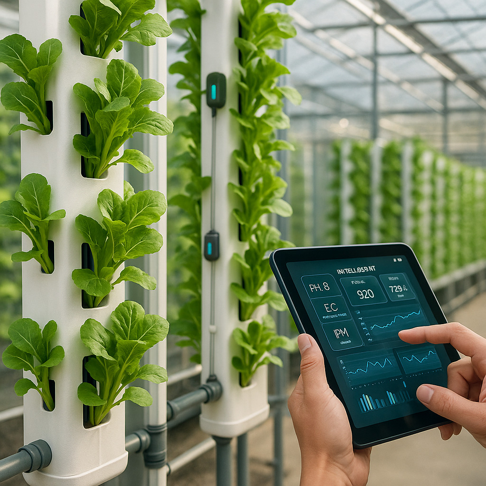

Hidroponia Inteligente
Cultivo de precisão com sensores, automação regenerativa e controle digital
Sobre o sistema
A Hidroponia Inteligente Agroverso integra sensores de pH, temperatura e nutrientes com estrutura modular e verticalizada. O controle é realizado via aplicativo ou painel web, garantindo máxima eficiência no uso de água e crescimento otimizado das plantas.
BenefÃcios principais
- 💧 Economia de até 90% de água em comparação ao cultivo tradicional
- 📊 Monitoramento em tempo real de parâmetros ambientais
- 🧠Automação das dosagens e correções de nutrientes
- 🢠Aplicável em estufas urbanas, telhados, containers e galpões
- 📱 Controle remoto via app com dashboard integrado
Aplicações recomendadas
Ideal para hortas comerciais, programas de alimentação urbana, escolas, produtores urbanos e comunidades regenerativas em qualquer escala.